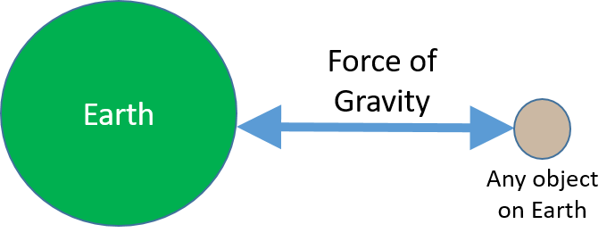
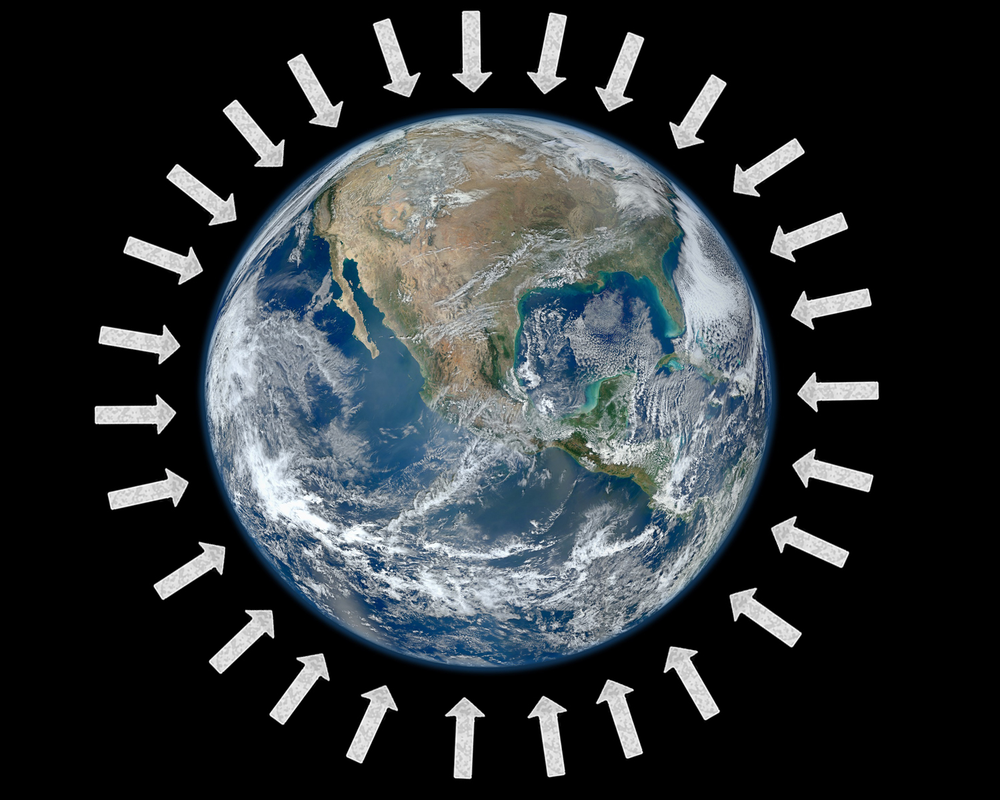
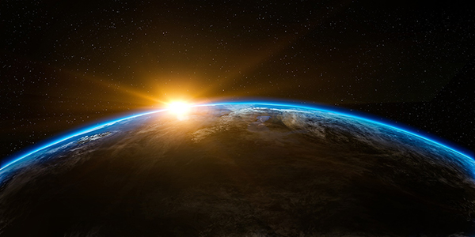

Earth's Gravitational Force
What is a Gravitational Force? Gravitational forces are the forces between any two objects that have mass. The gravitational forces between two objects are "mutual." By "mutual" force, we mean that the magnitude (or amount) of the force on both objects is the same (just in different directions). This idea is represented in the picture below, where the force of gravity on an object due to the earth is the same as the force of gravity on the earth from that object. The forces are just in opposite directions. (Sounds crazy, right? But it's true!) This idea is discussed in more detail in the Gravitational Force unit.
The important point here is that the gravitational forces acting on the Earth and acting on any object on or near the Earth are equal in strength.
Direction of Gravitational Force. The direction of the force of gravity for all objects on earth is downward and toward the center of the earth (this idea is represented in the picture below). This is true for any planet or other body in outer space: the force of gravity on objects always acts downward and toward the center of the planet or other body in outer space.

Magnitude (strength or amount) of Earth's Gravitational Force. In general, the acceleration of an object in a given direction is caused by the net force acting on that object in that direction. The exact value of the acceleration of an object in a given direction is equal to the net force acting in that direction divided by the mass of the object (see the introductory unit to Newton's Second Law for more information).
Newton's Second Law:
Acceleration of object = The net force acting on object / mass of object
Newton's Second Law also applies to gravitational forces...
On Earth, if only gravity is acting on an object (there is no air resistance), the object will fall straight down toward the center of the earth. The acceleration of any object caused by the earth's gravity is g (which is equal to about 10 m/s2 or meters per second per second downward). (This may seem surprising to you. But we know this because scientists have measured the acceleration of different objects falling in vacuums (with no air) and have found that they all fall at the same rate. Even a feather falls at the same rate as a rock (if there is no air resistance)!)
According to Newton's Second Law:
Acceleration of object = The net force acting on object / mass of object
Because gravity is the only force acting on the object, the "net" force is just the force due to gravity:
Acceleration of object = Gravitational force on object / mass of object
But we know, from scientific experiments, that all objects fall with an acceleration of g (when there is no air resistance). So,
g (m/s2) = Gravitational force on object / mass of object (kg)
So, the magnitude of the earth’s gravitational force pulling down on an object is:
Weight. We call the gravitational force on an object caused by the Earth's mass the weight of the object (on Earth). The weight of an object is equal to the mass of the object times the acceleration due to gravity on Earth: g (about 10 m/s2):
Weight of object = mass of object * acceleration due to gravity
The more mass an object has, the stronger the earth pulls on that object (and, because gravity is a mutually attractive force, the stronger the object pulls on the earth!). (See the Gravitational Force unit for more information.) The force that the earth pulls on an object on the earth is the object's weight. And the direction of the force of weight is straight down (toward the center of the earth).
Difference between Mass and Weight. As discussed in the Mass and Gravitational Force units, the mass of an object is constant and does not depend on where the object is. In contrast, the weight of an object does depend on where the object is: the weight of an object on earth will be more than the weight of that object on the moon. But the object will weigh less on earth than it would on Jupiter (which is a very massive planet!).
The Earth's gravity allows us to have an atmosphere. Like all matter, the molecules that make up the air in the Earth's atmosphere have mass. So, they are also pulled down by the Earth's gravity. If they were not pulled down, the molecules that make up air in our atmosphere would just fly off into outer space. And we would not be able to breathe! So, if air molecules did not have mass, we humans—and other animals and plants on the Earth—would not be alive.
The picture above shows the thin atmosphere surrounding the earth, held by the earth's gravity.